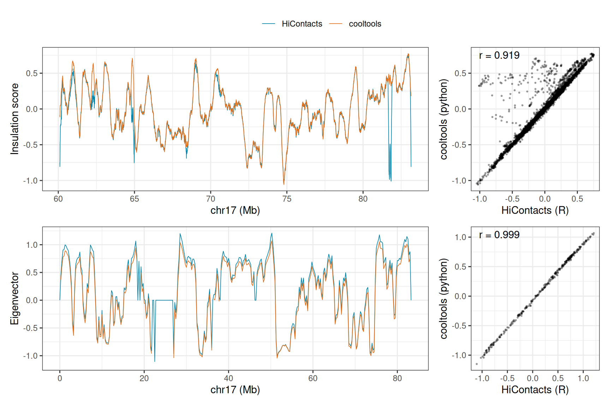

## `reticulate` is attached first, so that `import()` refers to
## `HiCExperiment`'s rather than to `reticulate`'s
library(reticulate)
library(dplyr)
##
## Attaching package: 'dplyr'
## The following objects are masked from 'package:stats':
##
## filter, lag
## The following objects are masked from 'package:base':
##
## intersect, setdiff, setequal, union
library(ggplot2)
library(patchwork)
library(GenomicRanges)
## Loading required package: stats4
## Loading required package: BiocGenerics
## Loading required package: generics
##
## Attaching package: 'generics'
## The following object is masked from 'package:dplyr':
##
## explain
## The following objects are masked from 'package:base':
##
## as.difftime, as.factor, as.ordered, intersect, is.element,
## setdiff, setequal, union
##
## Attaching package: 'BiocGenerics'
## The following object is masked from 'package:dplyr':
##
## combine
## The following objects are masked from 'package:stats':
##
## IQR, mad, sd, var, xtabs
## The following object is masked from 'package:utils':
##
## data
## The following objects are masked from 'package:base':
##
## Filter, Find, Map, Position, Reduce, anyDuplicated, aperm,
## append, as.data.frame, basename, cbind, colnames, dirname,
## do.call, duplicated, eval, evalq, get, grep, grepl, is.unsorted,
## lapply, mapply, match, mget, order, paste, pmax, pmax.int, pmin,
## pmin.int, rank, rbind, rownames, sapply, saveRDS, scale,
## sequence, table, tapply, transform, unique, unsplit, which.max,
## which.min
## Loading required package: S4Vectors
##
## Attaching package: 'S4Vectors'
## The following objects are masked from 'package:dplyr':
##
## first, rename
## The following object is masked from 'package:utils':
##
## findMatches
## The following objects are masked from 'package:base':
##
## I, expand.grid, unname
## Loading required package: IRanges
##
## Attaching package: 'IRanges'
## The following objects are masked from 'package:dplyr':
##
## collapse, desc, slice
## Loading required package: Seqinfo
library(HiCExperiment)
## Consider using the `HiContacts` package to perform advanced genomic operations
## on `HiCExperiment` objects.
##
## Read "Orchestrating Hi-C analysis with Bioconductor" online book to learn more:
## https://js2264.github.io/OHCA/
##
## Attaching package: 'HiCExperiment'
## The following object is masked from 'package:S4Vectors':
##
## metadata<-
## The following object is masked from 'package:ggplot2':
##
## resolution
library(HiContactsData)
## Loading required package: ExperimentHub
## Loading required package: AnnotationHub
## Loading required package: BiocFileCache
## Loading required package: dbplyr
##
## Attaching package: 'dbplyr'
## The following objects are masked from 'package:dplyr':
##
## ident, sql, sql_escape_ident, sql_escape_string
## OpenTelemetry error: there is no package called 'otelsdk'
## OpenTelemetry error: there is no package called 'otelsdk'
library(HiContacts)
## Registered S3 methods overwritten by 'readr':
## method from
## as.data.frame.spec_tbl_df vroom
## as_tibble.spec_tbl_df vroom
## format.col_spec vroom
## print.col_spec vroom
## print.collector vroom
## print.date_names vroom
## print.locale vroom
## str.col_spec vroom
library(BiocParallel)
BiocBook::setup_python()
## ✔ Using the `python` already configured for this session: '/opt/R-cache/R/BiocBook/envs/OHCA/bin/python'10 Interoperability with python: cooltools
NotePre-loading packages and objects 📦
NoteAims
This chapter shows how python tools dedicated to Hi-C analysis can be used side by side with HiCExperiment and HiContacts, within a single analysis:
- Running
cooltools(Open2C, Abdennur, Abraham, et al. (2024)) on a.mcoolfile fetched inR; - Passing objects between
Randpython, in both directions; - Comparing the insulation scores and A/B compartments computed by
HiContactsand bycooltoolsfrom the same data.
10.1 Why cooltools?
cooltools is the python toolkit developed by the Open2C community to analyze contact matrices stored in .cool/.mcool files, built on top of cooler (Abdennur & Mirny (2019)) and bioframe (Open2C, Abdennur, Fudenberg, et al. (2024)). It is the reference implementation of many analyses covered in this book, and the 4DN consortium uses it to compute the insulation and compartment tracks it distributes (see the chapter on public Hi-C data portals).
Running it next to HiContacts is useful to compare results, to reproduce published analyses, or to use features only available in one of them. The python code of this chapter is executed every time the book is built, including when the Bioconductor Build System rebuilds it.
10.2 Setting up python
python chunks of this book are executed through reticulate, in a python session living alongside the R session. R objects are available from python as r.<object>, and python objects from R as py$<object>.
TipInstalling
python packages for this book
The python packages used in this chapter are declared, with pinned versions, in the conda environment file of the book (inst/requirements.yml):
## The conda environment this book's python chunks run in, created at build
## time by BiocBook::setup_python(). Any edit to this file gives the book a new
## environment on the next render.
##
## Versions are pinned so that the rendered book does not change without a
## commit. `nodefaults` keeps the Anaconda `defaults` channel out.
name:
OHCA
channels:
- conda-forge
- bioconda
- nodefaults
dependencies:
- python=3.12
- cooler=0.10.4
- cooltools=0.7.1
- bioframe=0.8.0
- pandas=2.3.3
## matplotlib >= 3.11 links libraqm, which needs a more recent harfbuzz
## than the one R sessions have already loaded on the Bioconductor images
## (Ubuntu 24.04): `import matplotlib` then fails
- matplotlib-base=3.10BiocBook::setup_python(), called at the top of this chapter, creates this environment if needed (fetching a standalone micromamba if it finds none on the machine) and activates it with reticulate. In the book’s Docker image, the environment is already installed and activated.
10.3 Fetching data in R, reading it in python
This chapter uses the micro-C dataset (Krietenstein et al. (2020)) already analyzed in the chapter on topological features. It contains intra-chromosomal interactions within chr17, binned at 5000, 100000 and 250000 bp. The .mcool file is fetched from R…
mcool <- unname(HiContactsData('microC', 'mcool'))
## see ?HiContactsData and browseVignettes('HiContactsData') for documentation
## loading from cache
mcool
## [1] "/opt/R-cache/R/ExperimentHub/109b72474fcc_8601"… and opened in python with cooler, using the file path defined in R:
import cooler
clr = cooler.Cooler(f"{r.mcool}::/resolutions/5000")
clr.info
## {'bin-size': 5000, 'bin-type': 'fixed', 'creation-date': '2023-04-03T09:47:43.335412', 'format': 'HDF5::Cooler', 'format-url': 'https://github.com/open2c/cooler', 'format-version': 3, 'generated-by': 'cooler-0.9.1', 'genome-assembly': 'unknown', 'metadata': {}, 'nbins': 16652, 'nchroms': 1, 'nnz': 10086139, 'storage-mode': 'symmetric-upper', 'sum': 10086710}10.4 Insulation and domain boundaries
cooltools.insulation() computes the diamond insulation score (Crane et al. (2015)) and calls domain boundaries. To match the analysis of the topological features chapter, it is run on the long arm of chr17 (from 60 Mb), at 5 kb resolution, with a 100 kb window. bioframe defines this genomic region as a “view”:
import bioframe
import cooltools
view_chr17q = bioframe.make_viewframe([("chr17", 60_000_000, 83_257_441, "chr17q")])
insulation = cooltools.insulation(clr, [100_000], view_df = view_chr17q, verbose = False)
insulation[["chrom", "start", "end", "log2_insulation_score_100000", "is_boundary_100000"]].dropna()
## chrom start ... log2_insulation_score_100000 is_boundary_100000
## 12000 chr17 60000000 ... 0.750176 False
## 12001 chr17 60005000 ... 0.774725 False
## 12002 chr17 60010000 ... 0.771112 False
## 12003 chr17 60015000 ... 0.771112 False
## 12004 chr17 60020000 ... 0.771112 False
## ... ... ... ... ... ...
## 16636 chr17 83180000 ... 0.048813 False
## 16637 chr17 83185000 ... 0.007739 False
## 16638 chr17 83190000 ... -0.050490 False
## 16639 chr17 83195000 ... -0.093605 False
## 16640 chr17 83200000 ... -0.118614 False
##
## [4641 rows x 5 columns]cooltools called 31 domain boundaries on this arm.
10.5 A/B compartments: from R to python and back
cooltools.eigs_cis() computes the eigenvectors of the contact matrix, and orients them with a “phasing track” (such as the GC content of each genomic bin), so that positive values correspond to the A compartment.
The 250 kb bins of the contact matrix are listed in python…
clr_250kb = cooler.Cooler(f"{r.mcool}::/resolutions/250000")
bins = clr_250kb.bins()[:][["chrom", "start", "end"]]… their GC content is computed in R, from the BSgenome reference sequence used throughout this book…
hg38 <- BSgenome.Hsapiens.UCSC.hg38::BSgenome.Hsapiens.UCSC.hg38
bins <- makeGRangesFromDataFrame(py$bins, starts.in.df.are.0based = TRUE)
GC <- Biostrings::letterFrequency(
Biostrings::getSeq(hg38, bins), letters = "GC", as.prob = TRUE
)[, 1]
gc_track <- data.frame(py$bins, GC = GC)
head(gc_track)
## chrom start end GC
## 0 chr17 0 250000 0.383084
## 1 chr17 250000 500000 0.433972
## 2 chr17 500000 750000 0.465556
## 3 chr17 750000 1000000 0.503592
## 4 chr17 1000000 1250000 0.547712
## 5 chr17 1250000 1500000 0.508480… and the GC track is passed back to python to phase the eigenvectors:
view_chr17 = bioframe.make_viewframe([("chr17", 0, 83_257_441, "chr17")])
eigenvalues, eigenvectors = cooltools.eigs_cis(
clr_250kb, phasing_track = r.gc_track, view_df = view_chr17, n_eigs = 3
)
eigenvectors.dropna().head()
## chrom start end weight E1 E2 E3
## 1 chr17 250000 500000 0.006269 0.370079 0.451831 -0.511430
## 2 chr17 500000 750000 0.005672 0.601148 0.727578 -0.505331
## 3 chr17 750000 1000000 0.005286 0.781408 0.734928 -0.216928
## 4 chr17 1000000 1250000 0.004646 0.796056 0.599781 -0.063727
## 5 chr17 1250000 1500000 0.005207 0.890587 0.693586 0.120893
10.6 Do R and python agree?
The same analyses are run with HiContacts, exactly as in the chapter on topological features:
microC <- import(CoolFile(mcool), resolution = 250000)
microC_compts <- getCompartments(microC, genome = hg38)
## Going through preflight checklist...
## Parsing intra-chromosomal contacts for each chromosome...
## Computing eigenvectors for each chromosome...
hic <- zoom(microC, 5000) |>
refocus('chr17:60000001-83257441') |>
getDiamondInsulation(window_size = 100000, BPPARAM = SerialParam(progressbar = FALSE)) |>
getBorders()
## Going through preflight checklist...
## Scan each window and compute diamond insulation score...
## Annotating diamond score prominence for each window...The python results are retrieved in R as data.frames, and matched to the HiContacts results bin by bin (python coordinates are 0-based, R coordinates are 1-based):
insulation <- tibble(
start = start(metadata(hic)$insulation) - 1,
HiContacts = metadata(hic)$insulation$insulation
) |> inner_join(
tibble(start = py$insulation$start, cooltools = py$insulation$log2_insulation_score_100000),
by = "start"
)
compartments <- tibble(
start = start(metadata(microC_compts)$eigens) - 1,
HiContacts = metadata(microC_compts)$eigens$eigen
) |> inner_join(
tibble(start = py$eigenvectors$start, cooltools = py$eigenvectors$E1),
by = "start"
)
cors <- c(
insulation = cor(insulation$HiContacts, insulation$cooltools, use = "complete.obs"),
compartments = cor(compartments$HiContacts, compartments$cooltools, use = "complete.obs")
)
cors
## insulation compartments
## 0.9188905 0.9994918tracks <- function(df, ylab) {
tidyr::pivot_longer(df, c(HiContacts, cooltools), names_to = "tool") |>
ggplot(aes(x = start / 1e6, y = value, colour = tool)) +
geom_line(linewidth = 0.3, na.rm = TRUE) +
scale_colour_manual(values = c(HiContacts = "#0484a9", cooltools = "#e2711d")) +
labs(x = "chr17 (Mb)", y = ylab, colour = NULL) +
theme_bw() +
theme(legend.position = "top")
}
scatter <- function(df, r) {
ggplot(df, aes(x = HiContacts, y = cooltools)) +
geom_point(size = 0.4, alpha = 0.3, na.rm = TRUE) +
annotate("text", x = -Inf, y = Inf, hjust = -0.2, vjust = 1.5,
label = sprintf("r = %.3f", r)) +
labs(x = "HiContacts (R)", y = "cooltools (python)") +
theme_bw()
}
wrap_plots(
tracks(insulation, "Insulation score"), scatter(insulation, cors[["insulation"]]),
tracks(compartments, "Eigenvector"), scatter(compartments, cors[["compartments"]]),
ncol = 2, widths = c(3, 1), guides = "collect"
) & theme(legend.position = "top")
chr17 long arm, 5 kb) and A/B compartment eigenvectors (bottom, chr17, 250 kb) computed by HiContacts (R) and by cooltools (python) from the same micro-C contact matrix.
Both tools agree closely (Figure 10.1). The compartment eigenvectors are almost identical (Pearson correlation of 0.999), and so are their signs, both being phased with the same GC track. Insulation scores are highly correlated as well (0.919): the two implementations differ in how they normalize the score (by its median in cooltools, by its mean in HiContacts) and handle bins filtered out by the balancing, not in what they measure.
Domain boundaries, on the other hand, are called from these scores with different procedures. Both keep the local minima of the insulation score that are prominent enough, but HiContacts::getBorders() measures each minimum against the next local maximum and uses a fixed threshold (0.2 by default), while cooltools.insulation() uses the topographic prominence of each minimum and sets its threshold from their distribution (Li’s method, by default). The two tools therefore call different sets of boundaries from very similar scores:
borders_HiContacts <- topologicalFeatures(hic, "borders")
borders_cooltools <- py$insulation |>
filter(is_boundary_100000) |>
makeGRangesFromDataFrame(starts.in.df.are.0based = TRUE)
c(
HiContacts = length(borders_HiContacts),
cooltools = length(borders_cooltools),
`HiContacts borders within 10 kb of a cooltools boundary` =
sum(overlapsAny(borders_HiContacts, borders_cooltools, maxgap = 10000))
)
## HiContacts
## 21
## cooltools
## 31
## HiContacts borders within 10 kb of a cooltools boundary
## 3Comparing boundaries between studies, or between tools, thus requires using the same calling procedure on both sides, rather than comparing lists of boundaries called by different tools.
Session info
NoteClick to expand 👇
sessioninfo::session_info(include_base = TRUE)
## ─ Session info ────────────────────────────────────────────────────────────
## setting value
## version R version 4.6.1 (2026-06-24)
## os Ubuntu 24.04.4 LTS
## system x86_64, linux-gnu
## ui X11
## language (EN)
## collate C
## ctype en_US.UTF-8
## tz Etc/UTC
## date 2026-10-06
## pandoc 3.11 @ /usr/bin/ (via rmarkdown)
## quarto 1.11.5 @ /usr/local/bin/quarto
##
## ─ Packages ────────────────────────────────────────────────────────────────
## package * version date (UTC) lib source
## abind 1.4-8 2024-09-12 [2] RSPM (R 4.6.0)
## AnnotationDbi 1.75.2 2026-07-21 [2] Bioconductor 3.24 (R 4.6.1)
## AnnotationHub * 4.3.2 2026-06-30 [2] Bioconductor 3.24 (R 4.6.1)
## askpass 1.2.1 2024-10-04 [2] RSPM (R 4.6.0)
## base * 4.6.1 2026-09-11 [3] local
## beeswarm 0.4.0 2021-06-01 [2] RSPM (R 4.6.0)
## Biobase 2.73.2 2026-07-29 [2] Bioconductor 3.24 (R 4.6.1)
## BiocBaseUtils 1.15.1 2026-05-10 [2] Bioconductor 3.24 (R 4.6.1)
## BiocBook 1.11.1 2026-09-06 [2] Bioconductor 3.24 (R 4.6.1)
## BiocFileCache * 3.3.0 2026-04-28 [2] Bioconductor 3.24 (R 4.6.1)
## BiocGenerics * 0.59.12 2026-08-11 [2] Bioconductor 3.24 (R 4.6.1)
## BiocIO 1.23.3 2026-04-29 [2] Bioconductor 3.24 (R 4.6.1)
## BiocManager 1.30.27 2025-11-14 [2] CRAN (R 4.6.1)
## BiocParallel * 1.47.0 2026-04-28 [2] Bioconductor 3.24 (R 4.6.1)
## BiocVersion 3.24.0 2026-04-28 [2] Bioconductor 3.24 (R 4.6.1)
## Biostrings 2.81.9 2026-09-06 [2] Bioconductor 3.24 (R 4.6.1)
## bit 4.6.0 2025-03-06 [2] RSPM (R 4.6.0)
## bit64 4.8.6 2026-09-01 [2] RSPM (R 4.6.0)
## bitops 1.1-0 2026-07-30 [2] RSPM (R 4.6.0)
## blob 1.3.0 2026-01-14 [2] RSPM (R 4.6.0)
## BSgenome 1.81.1 2026-07-29 [2] Bioconductor 3.24 (R 4.6.1)
## BSgenome.Hsapiens.UCSC.hg38 1.4.5 2026-07-20 [2] Bioconductor
## cachem 1.1.0 2024-05-16 [2] RSPM (R 4.6.0)
## cigarillo 1.3.1 2026-07-13 [2] Bioconductor 3.24 (R 4.6.1)
## cli 3.6.6 2026-04-09 [2] RSPM (R 4.6.0)
## codetools 0.2-20 2024-03-31 [3] CRAN (R 4.6.1)
## compiler 4.6.1 2026-09-11 [3] local
## crayon 1.5.3 2024-06-20 [2] RSPM (R 4.6.0)
## credentials 2.0.3 2025-09-12 [2] RSPM (R 4.6.0)
## curl 8.0.0 2026-08-25 [2] RSPM (R 4.6.0)
## datasets * 4.6.1 2026-09-11 [3] local
## DBI 1.3.0 2026-02-25 [2] RSPM (R 4.6.0)
## dbplyr * 2.6.0 2026-06-17 [2] RSPM (R 4.6.0)
## DelayedArray 0.39.8 2026-09-30 [2] Bioconductor 3.24 (R 4.6.1)
## dichromat 2.0-1 2026-07-22 [2] RSPM (R 4.6.0)
## digest 0.6.39 2025-11-19 [2] RSPM (R 4.6.0)
## dplyr * 1.2.1 2026-04-03 [2] RSPM (R 4.6.0)
## evaluate 1.0.5 2025-08-27 [2] RSPM (R 4.6.0)
## ExperimentHub * 3.3.2 2026-08-12 [2] Bioconductor 3.24 (R 4.6.1)
## farver 2.1.2 2024-05-13 [2] RSPM (R 4.6.0)
## fastmap 1.2.0 2024-05-15 [2] RSPM (R 4.6.0)
## filelock 1.0.3 2023-12-11 [2] RSPM (R 4.6.0)
## fs 2.1.0 2026-04-18 [2] RSPM (R 4.6.0)
## generics * 0.1.4 2025-05-09 [2] RSPM (R 4.6.0)
## GenomeInfoDb 1.49.1 2026-05-24 [2] Bioconductor 3.24 (R 4.6.1)
## GenomicAlignments 1.49.2 2026-09-02 [2] Bioconductor 3.24 (R 4.6.1)
## GenomicRanges * 1.65.4 2026-09-02 [2] Bioconductor 3.24 (R 4.6.1)
## gert 2.4.1 2026-08-19 [2] RSPM (R 4.6.0)
## ggbeeswarm 0.7.3 2025-11-29 [2] RSPM (R 4.6.0)
## ggplot2 * 4.0.3 2026-04-22 [2] RSPM (R 4.6.0)
## ggrastr 1.0.2 2023-06-01 [2] RSPM (R 4.6.0)
## gh 1.6.1 2026-07-20 [2] RSPM (R 4.6.0)
## gitcreds 0.1.2 2022-09-08 [2] RSPM (R 4.6.0)
## glue 1.8.1 2026-04-17 [2] RSPM (R 4.6.0)
## graphics * 4.6.1 2026-09-11 [3] local
## grDevices * 4.6.1 2026-09-11 [3] local
## grid 4.6.1 2026-09-11 [3] local
## gtable 0.3.6 2024-10-25 [2] RSPM (R 4.6.0)
## HiCExperiment * 1.13.1 2026-10-04 [2] Bioconductor 3.24 (R 4.6.1)
## HiContacts * 1.15.2 2026-10-04 [2] Bioconductor 3.24 (R 4.6.1)
## HiContactsData * 1.5.3 2026-10-06 [2] Github (js2264/HiContactsData@d5bebe7)
## hms 1.1.4 2025-10-17 [2] RSPM (R 4.6.0)
## htmltools 0.5.9 2025-12-04 [2] RSPM (R 4.6.0)
## htmlwidgets 1.6.4 2023-12-06 [2] RSPM (R 4.6.0)
## httr 1.4.9 2026-09-01 [2] RSPM (R 4.6.0)
## httr2 1.3.0 2026-07-13 [2] RSPM (R 4.6.0)
## InteractionSet 1.41.0 2026-04-28 [2] Bioconductor 3.24 (R 4.6.1)
## IRanges * 2.47.5 2026-08-27 [2] Bioconductor 3.24 (R 4.6.1)
## jsonlite 2.0.0 2025-03-27 [2] RSPM (R 4.6.0)
## KEGGREST 1.53.6 2026-07-23 [2] Bioconductor 3.24 (R 4.6.1)
## knitr 1.52 2026-09-06 [2] RSPM (R 4.6.0)
## labeling 0.4.3 2023-08-29 [2] RSPM (R 4.6.0)
## lattice 0.23-1 2026-08-12 [2] RSPM (R 4.6.0)
## lifecycle 1.0.5 2026-01-08 [2] RSPM (R 4.6.0)
## magrittr 2.0.5 2026-04-04 [2] RSPM (R 4.6.0)
## Matrix 1.7-6 2026-07-25 [2] RSPM (R 4.6.0)
## MatrixGenerics 1.25.0 2026-04-28 [2] Bioconductor 3.24 (R 4.6.1)
## matrixStats 1.5.0 2025-01-07 [2] RSPM (R 4.6.0)
## memoise 2.0.1 2021-11-26 [2] RSPM (R 4.6.0)
## methods * 4.6.1 2026-09-11 [3] local
## openssl 2.4.2 2026-06-09 [2] RSPM (R 4.6.0)
## otel 0.2.0 2025-08-29 [2] RSPM (R 4.6.0)
## pak 0.11.1 2026-07-22 [2] RSPM (R 4.6.0)
## parallel 4.6.1 2026-09-11 [3] local
## patchwork * 1.3.2 2025-08-25 [2] RSPM (R 4.6.0)
## pillar 1.11.1 2025-09-17 [2] RSPM (R 4.6.0)
## pkgconfig 2.0.3 2019-09-22 [2] RSPM (R 4.6.0)
## png 0.1-9 2026-03-15 [2] RSPM (R 4.6.0)
## purrr 1.2.2 2026-04-10 [2] RSPM (R 4.6.0)
## R6 2.6.1 2025-02-15 [2] RSPM (R 4.6.0)
## rappdirs 0.3.4 2026-01-17 [2] RSPM (R 4.6.0)
## RColorBrewer 1.1-3 2022-04-03 [2] RSPM (R 4.6.0)
## Rcpp 1.1.2 2026-07-05 [2] RSPM (R 4.6.0)
## RCurl 1.98-1.20 2026-08-21 [2] RSPM (R 4.6.0)
## readr 2.2.0 2026-02-19 [2] RSPM (R 4.6.0)
## renv 1.3.0 2026-09-29 [2] RSPM (R 4.6.0)
## restfulr 0.0.17 2026-06-11 [2] RSPM (R 4.6.0)
## reticulate * 1.47.0 2026-09-03 [2] RSPM (R 4.6.0)
## rhdf5 2.57.18 2026-09-23 [2] Bioconductor 3.24 (R 4.6.1)
## rhdf5filters 1.25.4 2026-08-06 [2] Bioconductor 3.24 (R 4.6.1)
## Rhdf5lib 2.1.0 2026-04-28 [2] Bioconductor 3.24 (R 4.6.1)
## rjson 0.2.23 2024-09-16 [2] RSPM (R 4.6.0)
## rlang 1.3.0 2026-07-05 [2] RSPM (R 4.6.0)
## rmarkdown 2.32 2026-09-01 [2] RSPM (R 4.6.0)
## rprojroot 2.1.1 2025-08-26 [2] RSPM (R 4.6.0)
## Rsamtools 2.29.0 2026-04-28 [2] Bioconductor 3.24 (R 4.6.1)
## RSpectra 0.16-2 2024-07-18 [2] RSPM (R 4.6.0)
## RSQLite 3.53.3 2026-06-30 [2] RSPM (R 4.6.0)
## rtracklayer 1.73.0 2026-04-28 [2] Bioconductor 3.24 (R 4.6.1)
## S4Arrays 1.13.2 2026-09-30 [2] Bioconductor 3.24 (R 4.6.1)
## S4Vectors * 0.51.10 2026-09-16 [2] Bioconductor 3.24 (R 4.6.1)
## S7 0.2.2 2026-04-22 [2] RSPM (R 4.6.0)
## scales 1.4.0 2025-04-24 [2] RSPM (R 4.6.0)
## Seqinfo * 1.3.2 2026-08-27 [2] Bioconductor 3.24 (R 4.6.1)
## sessioninfo 1.2.4 2026-06-04 [2] RSPM (R 4.6.0)
## SparseArray 1.13.4 2026-09-30 [2] Bioconductor 3.24 (R 4.6.1)
## stats * 4.6.1 2026-09-11 [3] local
## stats4 * 4.6.1 2026-09-11 [3] local
## strawr 0.0.92 2024-07-16 [2] RSPM (R 4.6.0)
## stringi 1.8.9 2026-08-04 [2] RSPM (R 4.6.0)
## stringr 1.6.0 2025-11-04 [2] RSPM (R 4.6.0)
## SummarizedExperiment 1.43.0 2026-04-28 [2] Bioconductor 3.24 (R 4.6.1)
## sys 3.4.3 2024-10-04 [2] RSPM (R 4.6.0)
## tibble 3.3.1 2026-01-11 [2] RSPM (R 4.6.0)
## tidyr 1.3.2 2025-12-19 [2] RSPM (R 4.6.0)
## tidyselect 1.2.1 2024-03-11 [2] RSPM (R 4.6.0)
## tools 4.6.1 2026-09-11 [3] local
## tzdb 0.5.0 2025-03-15 [2] RSPM (R 4.6.0)
## UCSC.utils 1.9.0 2026-04-28 [2] Bioconductor 3.24 (R 4.6.1)
## usethis 3.2.2 2026-09-10 [2] RSPM (R 4.6.0)
## utils * 4.6.1 2026-09-11 [3] local
## vctrs 0.7.3 2026-04-11 [2] RSPM (R 4.6.0)
## vipor 0.4.7 2023-12-18 [2] RSPM (R 4.6.0)
## vroom 1.7.1 2026-03-31 [2] RSPM (R 4.6.0)
## withr 3.0.3 2026-06-19 [2] RSPM (R 4.6.0)
## xfun 0.61 2026-09-16 [2] RSPM (R 4.6.0)
## XML 3.99-0.25 2026-09-27 [2] RSPM (R 4.6.0)
## XVector 0.53.0 2026-04-28 [2] Bioconductor 3.24 (R 4.6.1)
## yaml 2.3.12 2025-12-10 [2] RSPM (R 4.6.0)
##
## [1] /tmp/Rtmpu8u3NE/Rinstb3e0c7701
## [2] /usr/local/lib/R/site-library
## [3] /usr/local/lib/R/library
## * ── Packages attached to the search path.
##
## ─ Python configuration ────────────────────────────────────────────────────
## python: /opt/R-cache/R/BiocBook/envs/OHCA/bin/python
## libpython: /opt/R-cache/R/BiocBook/envs/OHCA/lib/libpython3.12.so
## pythonhome: /opt/R-cache/R/BiocBook/envs/OHCA:/opt/R-cache/R/BiocBook/envs/OHCA
## version: 3.12.14 (main, Sep 2 2026, 23:27:36) [GCC 15.3.0]
## numpy: /opt/R-cache/R/BiocBook/envs/OHCA/lib/python3.12/site-packages/numpy
## numpy_version: 1.26.4
##
## NOTE: Python version was forced by RETICULATE_PYTHON
##
## ───────────────────────────────────────────────────────────────────────────References
Abdennur, N., & Mirny, L. A. (2019). Cooler: Scalable storage for hi-c data and other genomically labeled arrays. Bioinformatics, 36(1), 311–316. https://doi.org/10.1093/bioinformatics/btz540
Crane, E., Bian, Q., McCord, R. P., Lajoie, B. R., Wheeler, B. S., Ralston, E. J., Uzawa, S., Dekker, J., & Meyer, B. J. (2015). Condensin-driven remodelling of x chromosome topology during dosage compensation. Nature, 523(7559), 240–244. https://doi.org/10.1038/nature14450
Krietenstein, N., Abraham, S., Venev, S. V., Abdennur, N., Gibcus, J., Hsieh, T.-H. S., Parsi, K. M., Yang, L., Maehr, R., Mirny, L. A., Dekker, J., & Rando, O. J. (2020). Ultrastructural details of mammalian chromosome architecture. Molecular Cell, 78(3), 554–565.e7. https://doi.org/10.1016/j.molcel.2020.03.003
Open2C, Abdennur, N., Abraham, S., Fudenberg, G., Flyamer, I. M., Galitsyna, A. A., Goloborodko, A., Imakaev, M., Oksuz, B. A., Venev, S. V., & Xiao, Y. (2024). Cooltools: Enabling high-resolution hi-c analysis in python. PLOS Computational Biology, 20(5), e1012067. https://doi.org/10.1371/journal.pcbi.1012067
Open2C, Abdennur, N., Fudenberg, G., Flyamer, I. M., Galitsyna, A. A., Goloborodko, A., Imakaev, M., & Venev, S. V. (2024). Bioframe: Operations on genomic intervals in pandas dataframes. Bioinformatics, 40(2), btae088. https://doi.org/10.1093/bioinformatics/btae088